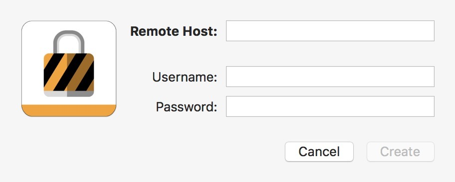

连接 VPN 服务器
本文主要讲解 Windows OS 、Mac OS 如何连接 VPN 服务器。 在不通的系统下连接方式基本机制，大抵不通的是需要涉及不通的工具。
Mac OS 连接 VPN 服务器
Mac OS 10.13.3 (17D102) 下已无法直接通过 偏好设置 - 网络 来配置 PPTP 类型的 VPN 服务。 需要借助到第三方工具，此处推荐使用 Shimo 。
1. 打开应用设置项，单击 + 号
2. 选择 PPLT/L2TP 类型，单击 Create
3. 键入 VPN 服务访问地址及账户密码

- Remote Host 即 VPN 服务地址，一般为 IP 地址
- Username 即运营者所提供的账户
- Password 即运营者所提供的账户对应的密码
键入完成后单击 Create 保存即可。
4. 点击开关按钮，连接服务器

当按钮底色过度成为绿色时表示连接成功。
Windows OS 连接 VPN 服务器
本文主要以 Windows 10 作为示例，可以通过网络设置项直接配置 VPN 服务。
1. 打开系统设置
2. 打开网络设置
3. 打开 VPN 设置，选择 添加 VPN 连接
4. 打开 VPN 设置，键入账户信息
- Vpn 服务商: 如果出现多个时请选择 Windows 内置
- 连接名称: 任意填写即可，例如 我的VPN
- 服务器名称或地址: VPN 服务地址，一般为 IP 地址
- VPN 类型: PPTP 类型
- 用户名（可选）: 运营者所提供的账户
- 密码（可选）: 运营者所提供的账户对应的密码
填写完成后，点按保存即可。
5. 配置完成后会 VPN 设置中会出现刚才配置完成的项目
6. 将其选中，点按 连接 按钮启用该服务
6.1 在任务栏网络图片处会出现快捷方式
7. 服务已启用，出现已连接的提示
开始你愉快的吃鸡之旅吧！